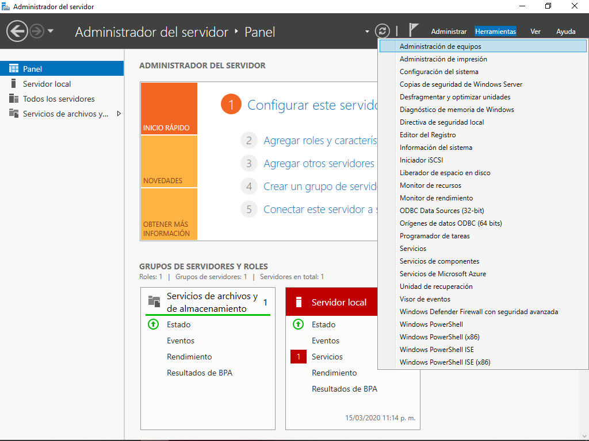
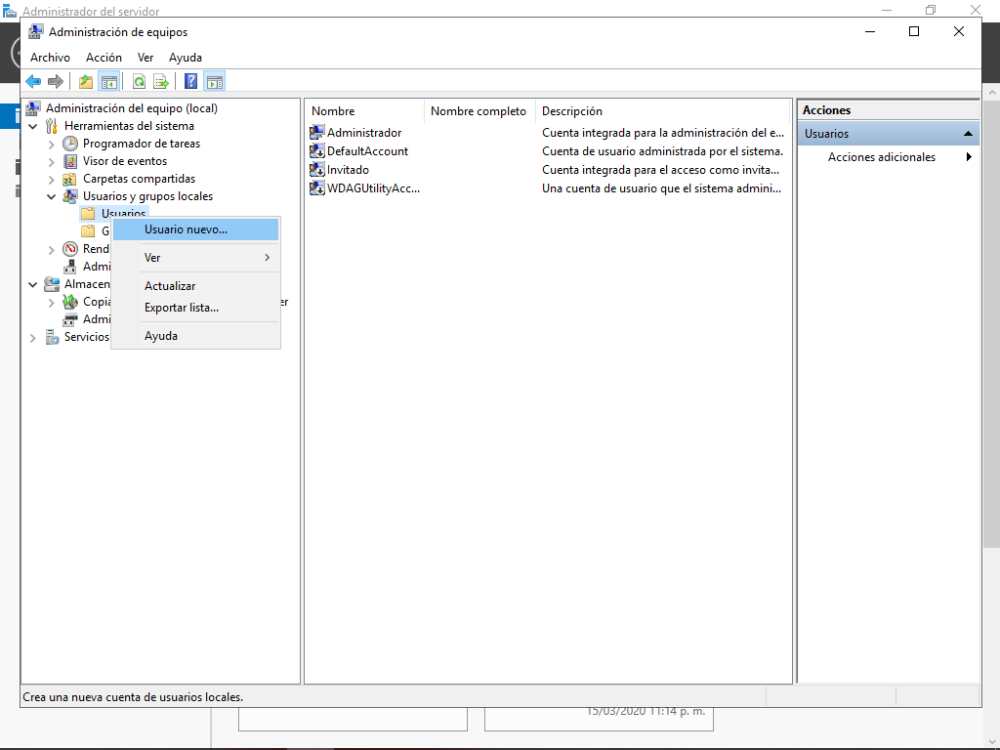
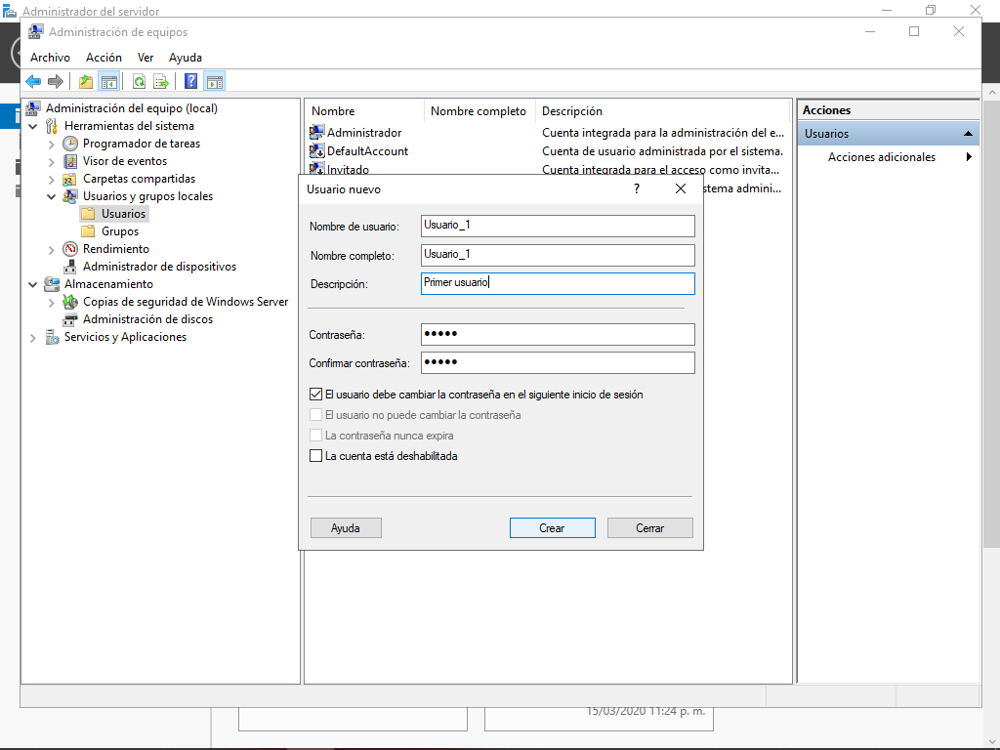
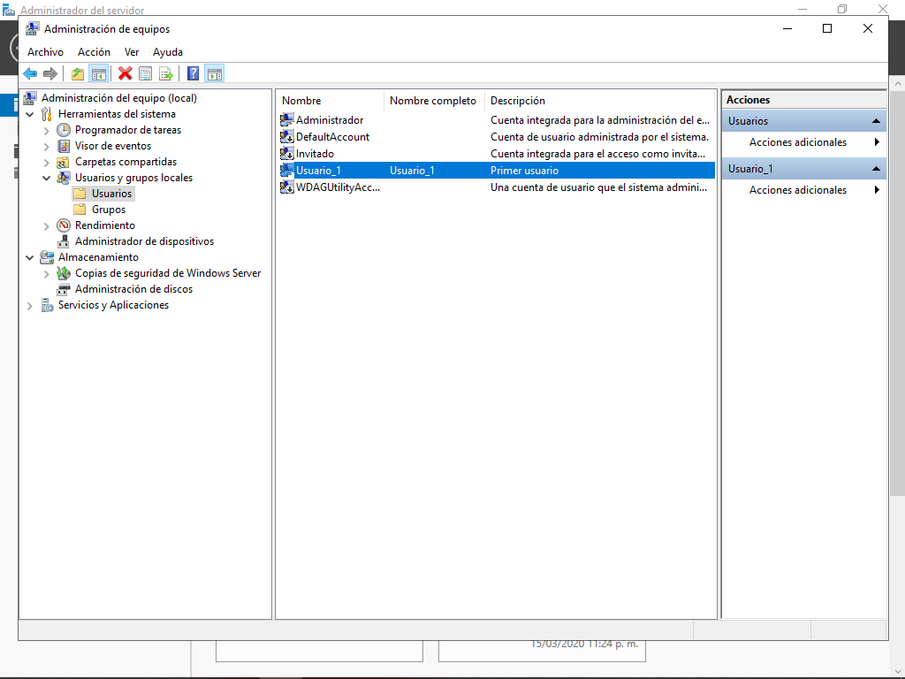
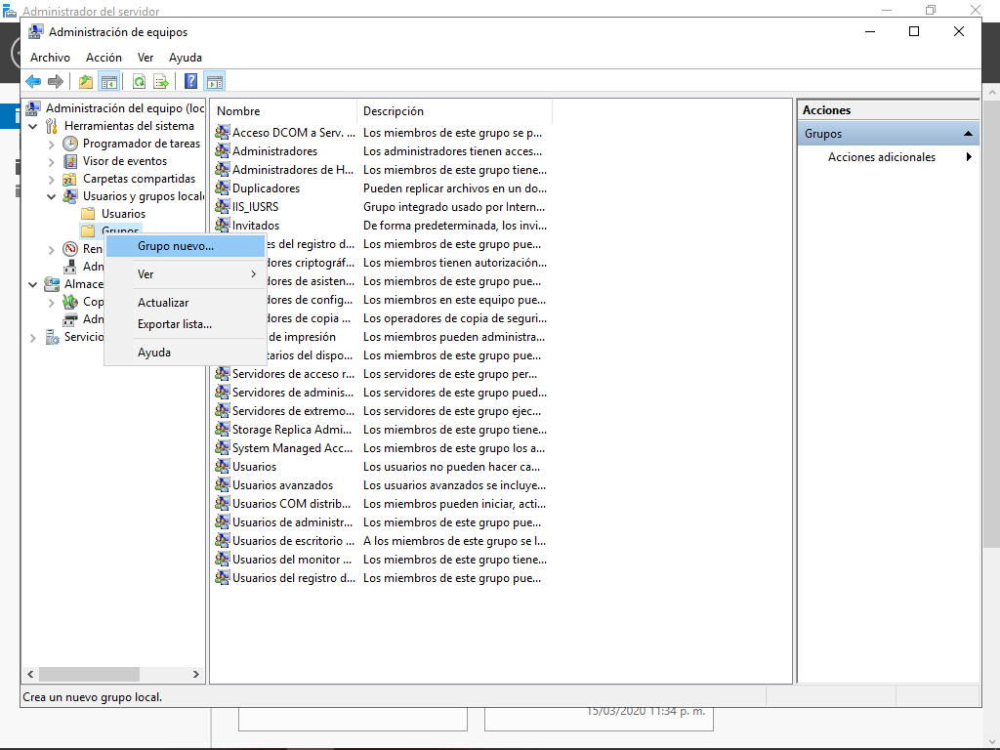
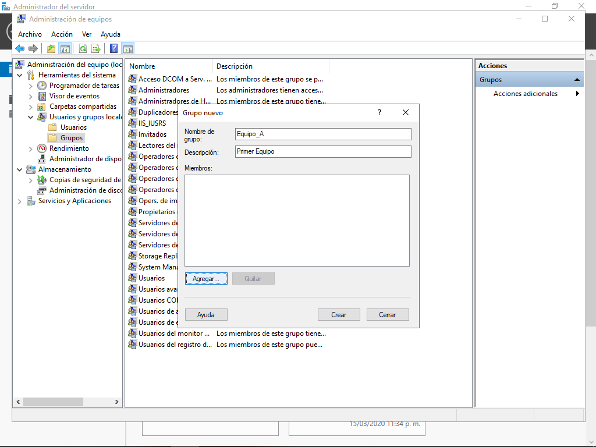
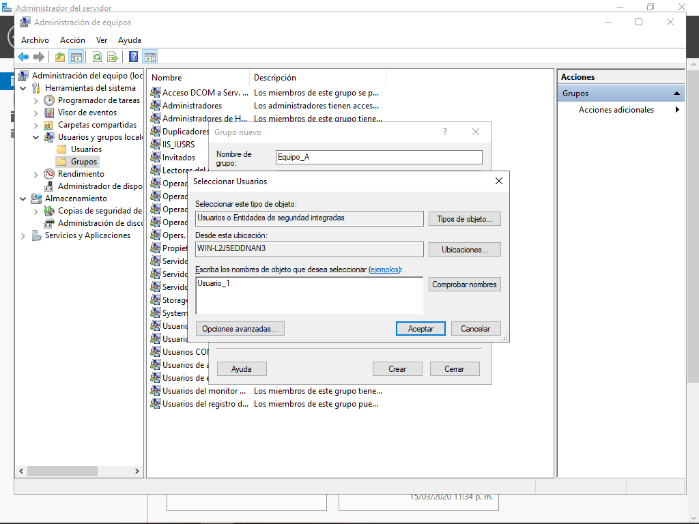
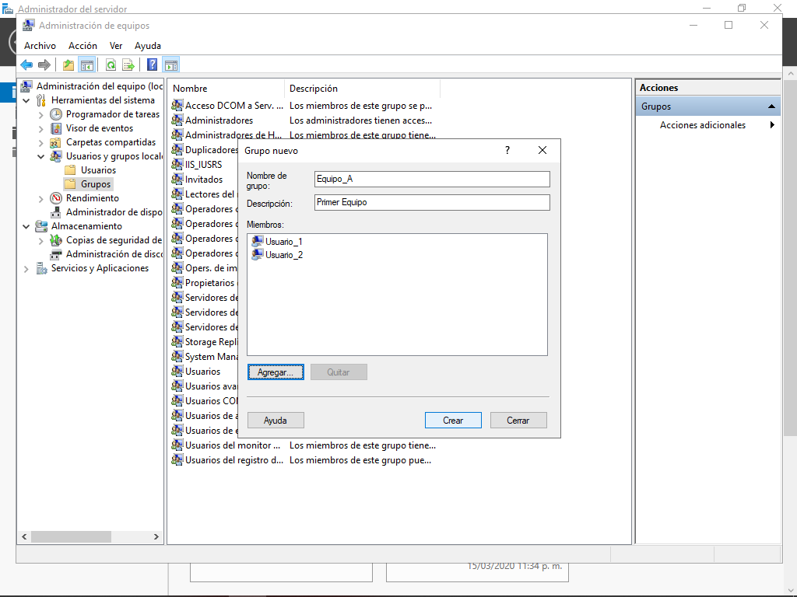
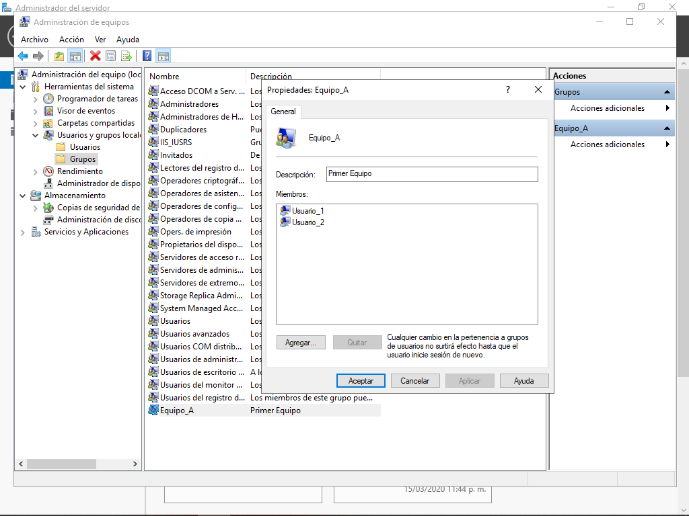
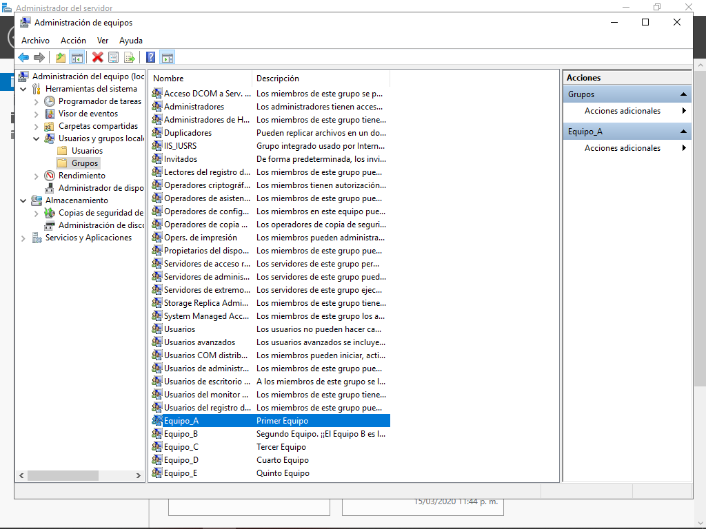

Instrucciones
- Instalar mínimo 10 usuarios y crear cuando menos 4 grupos de usuarios en Windows Server.
Requerimientos
- Windows Server instalado.
Comencemos
- Lo primero que haremos será crear nuestros usuarios. Para ello, abriremos el Administrador del Servidor y nos dirigiremos a la pestaña Herramientas >> Administración de Equipos.
- Una vez ahí, nos dirigiremos al apartado Usuarios y grupos locales >> Usuarios >> Clic derecho >> Usuario nuevo.
- Se abrirá una ventana emergente en donde podremos escribir un nuevo nombre de usuario, nombre completo, descripción, contraseña, y configurar otras opciones de cuenta y seguridad.
- Daremos clic en el botón Crear, posteriormente daremos clic en el botón Cerrar, y podremos observar cómo nuestro nuevo usuario ha sido creado existosamente.
- Ahora repetiremos los pasos anteriores para crear otros 9 usuarios más.
- Ahora procederemos a crear 5 grupos de usuarios, con dos usuarios cada uno. Para esto, ahora nos dirigiremos al apartado Usuarios y grupos locales >> Grupos >> Clic derecho >> Grupo nuevo.
- Nuevamente se abrirá una ventana emergente, desde la cuál podremos escribir un nuevo nombre para el grupo, agregar una descripción, y desde el botón Agregar, elegir qué usuarios existentes formarán parte del grupo.
- Cuando demos clic en el botón Agregar, podremos ver una segunda ventana emergente desde la cuál podremos escribir uno por uno el nombre de los usuarios que queremos agregar al grupo y después presionar el botón Aceptar.
- Una vez agregados todos los usuarios que queramos al grupo correspondiente, podremos ver nuestra ventana de grupo de la siguiente manera:
- Una vez creado el grupo, podremos verlo reflejado en la pantalla principal, y si damos clic derecho sobre él y seleccionamos la opción Propiedades, podremos ver su nombre, su descripción y los miembros que corresponden a él.
- Finalmente generamos otros 4 grupos nuevos y le agregamos a cada uno 2 usuarios, que serán consecutivos en este caso. Al terminar, podremos ver la pantalla principal de la siguiente manera:










